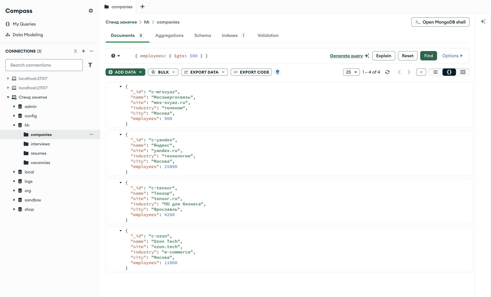
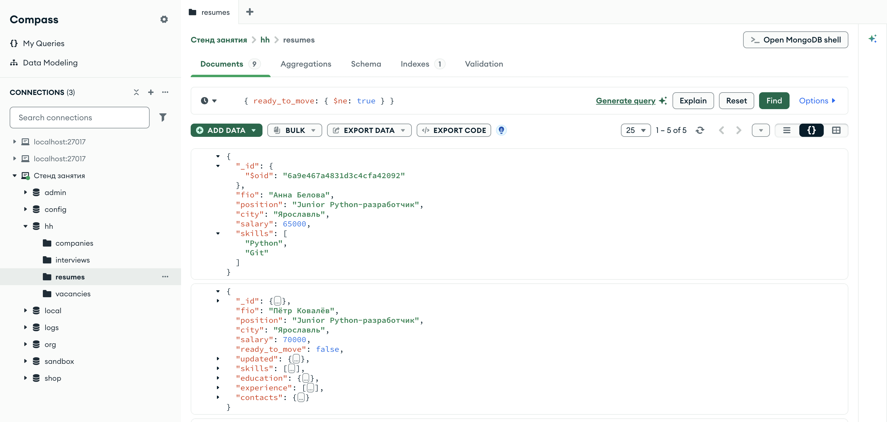

Справочник по MongoDB · модуль 2 · язык фильтров
2.2
Сравнение:
$eq $ne $gt $gte $lt $lte
В главе 2.1 значение в фильтре означало точное равенство. Здесь разобраны операторы сравнения: как записать «больше», «меньше» и «не равно», как задать диапазон двумя операторами на одном поле, как сравниваются даты и строки и почему $ne находит документы, в которых поля нет совсем.
- Категория
- Язык запросов
- Уровень
- Начальный
- Связанные темы
- Фильтр и точечная нотация, списки значений
$in, наличие поля$exists - Зачем это знать
- Отбирать документы по диапазону чисел и дат
Как запускать примеры этой главы
mongodb-glava-2.2-python.zip, 62 КБmongodb-glava-2.2-ruby.zip, 61 КБmongodb-glava-2.2-go.zip, 67 КБmongodb-glava-2.2-cpp.zip, 65 КБ — все примеры главы готовыми программами, учебные базы и стенд в Docker. В README.md — запуск в Docker, если Compass нет или он не подключается, и на установленном сервере с Compass, а также что должна напечатать каждая программа.lessons/ch2_2.py — пример вставляется в конец файлаlessons/ch2_2.rb — пример вставляется в конец файлаlessons/ch2_2.go — пример внутрь скобок в конце main, функции и типы — выше mainlessons/ch2_2.cpp — пример внутрь скобок в конце main, функции — выше maincd lessons, затем python ch2_2.pycd lessons, затем python3 ch2_2.py · в Docker: docker compose run --rm python lessons/ch2_2.pycd lessons, затем ruby ch2_2.rb · в Docker: docker compose run --rm ruby lessons/ch2_2.rbcd lessons, затем go run ch2_2.go · в Docker: docker compose run --rm go lessons/ch2_2.gocd lessons, затем g++ -std=c++17 ch2_2.cpp -o prog $(pkg-config --cflags --libs libmongocxx1) && ./prog · в Docker: docker compose run --rm cpp lessons/ch2_2.cpp§1Оператор в фильтре
Условие «равно» записывается парой «поле — значение». Для остальных условий значение поля в фильтре заменяют документом, в котором стоит оператор запроса — поле с именем, начинающимся со знака $. Фильтр {"employees": {"$gte": 500}} читается так: у документа есть поле employees, и его значение больше или равно 500.
Сервер отличает оператор от обычного вложенного документа по знаку $. В главе 2.1 фильтр {"salary": {"from": 60000}} сравнивал поле salary с документом {"from": 60000} целиком. Если имя поля во внутреннем документе начинается с $, сервер читает этот документ как условие.
Операторов сравнения шесть. Их имена — сокращения английских слов: equal — равно, not equal — не равно, greater than — больше, less than — меньше.
| Оператор | Условие | Пример | Что отбирает |
|---|---|---|---|
$eq | равно | {"city": {"$eq": "Казань"}} | то же, что {"city": "Казань"} |
$ne | не равно | {"city": {"$ne": "Казань"}} | все города, кроме Казани |
$gt | больше | {"salary": {"$gt": 100000}} | строго больше 100 000 |
$gte | больше или равно | {"salary": {"$gte": 100000}} | 100 000 и больше |
$lt | меньше | {"salary": {"$lt": 100000}} | строго меньше 100 000 |
$lte | меньше или равно | {"salary": {"$lte": 100000}} | 100 000 и меньше |
Первый пример главы работает с коллекцией companies: восемь компаний, у каждой в поле employees записано число сотрудников — от 6 до 25 000. Запрос отбирает компании, где сотрудников 500 и больше.
for doc in companies.find({"employees": {"$gte": 500}}, {"_id": 0, "name": 1, "employees": 1}): print(doc)
mongocxx::options::find options; options.projection(make_document(kvp("_id", 0), kvp("name", 1), kvp("employees", 1))); for (const auto& doc : companies.find(make_document(kvp("employees", make_document(kvp("$gte", 500)))), options)) { std::cout << bsoncxx::to_json(doc, bsoncxx::ExtendedJsonMode::k_relaxed) << std::endl; }
cursor, _ := companies.Find(ctx, bson.D{{Key: "employees", Value: bson.D{{Key: "$gte", Value: 500}}}}, options.Find().SetProjection(bson.D{{Key: "_id", Value: 0}, {Key: "name", Value: 1}, {Key: "employees", Value: 1}})) for cursor.Next(ctx) { var doc bson.D cursor.Decode(&doc) out, _ := bson.MarshalExtJSON(doc, false, false) fmt.Println(string(out)) }
companies.find({ "employees" => { "$gte" => 500 } }, projection: { "_id" => 0, "name" => 1, "employees" => 1 }) .each { |doc| puts doc.inspect }
{'name': 'Мосэнергосвязь', 'employees': 900}
{'name': 'Яндекс', 'employees': 25000}
{'name': 'Тензор', 'employees': 4200}
{'name': 'Ozon Tech', 'employees': 11000}
{ "name" : "Мосэнергосвязь", "employees" : 900 }
{ "name" : "Яндекс", "employees" : 25000 }
{ "name" : "Тензор", "employees" : 4200 }
{ "name" : "Ozon Tech", "employees" : 11000 }
{"name":"Мосэнергосвязь","employees":900}
{"name":"Яндекс","employees":25000}
{"name":"Тензор","employees":4200}
{"name":"Ozon Tech","employees":11000}
{"name"=>"Мосэнергосвязь", "employees"=>900}
{"name"=>"Яндекс", "employees"=>25000}
{"name"=>"Тензор", "employees"=>4200}
{"name"=>"Ozon Tech", "employees"=>11000}
Четыре компании из восьми. Документы идут в том порядке, в каком лежат в коллекции: сортировку оператор сравнения не задаёт. Если нужен порядок по числу сотрудников, к запросу добавляют sort из главы 1.6.
§2Диапазон на одном поле
Чтобы задать диапазон, в документ условия для одного поля ставят два оператора: {"salary": {"$gte": 70000, "$lte": 100000}}. Операторы внутри одного документа соединяются по «и», как пары в самом фильтре: зарплата должна быть не меньше 70 000 и не больше 100 000 одновременно.
Граница входит в диапазон или нет в зависимости от оператора. $gte и $lte включают границу, $gt и $lt — исключают. Пример считает резюме в диапазоне двумя способами и затем выводит документы первого.
print("$gte 70000 и $lte 100000:", resumes.count_documents({"salary": {"$gte": 70000, "$lte": 100000}})) print("$gt 70000 и $lte 100000: ", resumes.count_documents({"salary": {"$gt": 70000, "$lte": 100000}})) for doc in resumes.find({"salary": {"$gte": 70000, "$lte": 100000}}, {"_id": 0, "fio": 1, "salary": 1}).sort("salary", 1): print(doc)
std::cout << "$gte 70000 и $lte 100000: " << resumes.count_documents(make_document(kvp("salary", make_document(kvp("$gte", 70000), kvp("$lte", 100000))))) << std::endl; std::cout << "$gt 70000 и $lte 100000: " << resumes.count_documents(make_document(kvp("salary", make_document(kvp("$gt", 70000), kvp("$lte", 100000))))) << std::endl; mongocxx::options::find options; options.projection(make_document(kvp("_id", 0), kvp("fio", 1), kvp("salary", 1))); options.sort(make_document(kvp("salary", 1))); for (const auto& doc : resumes.find(make_document(kvp("salary", make_document(kvp("$gte", 70000), kvp("$lte", 100000)))), options)) { std::cout << bsoncxx::to_json(doc, bsoncxx::ExtendedJsonMode::k_relaxed) << std::endl; }
vklyuchaya, _ := resumes.CountDocuments(ctx, bson.D{{Key: "salary", Value: bson.D{{Key: "$gte", Value: 70000}, {Key: "$lte", Value: 100000}}}}) bez, _ := resumes.CountDocuments(ctx, bson.D{{Key: "salary", Value: bson.D{{Key: "$gt", Value: 70000}, {Key: "$lte", Value: 100000}}}}) fmt.Println("$gte 70000 и $lte 100000:", vklyuchaya) fmt.Println("$gt 70000 и $lte 100000: ", bez) cursor, _ := resumes.Find(ctx, bson.D{{Key: "salary", Value: bson.D{{Key: "$gte", Value: 70000}, {Key: "$lte", Value: 100000}}}}, options.Find(). SetProjection(bson.D{{Key: "_id", Value: 0}, {Key: "fio", Value: 1}, {Key: "salary", Value: 1}}). SetSort(bson.D{{Key: "salary", Value: 1}})) for cursor.Next(ctx) { var doc bson.D cursor.Decode(&doc) out, _ := bson.MarshalExtJSON(doc, false, false) fmt.Println(string(out)) }
puts "$gte 70000 и $lte 100000: " + resumes.count_documents({ "salary" => { "$gte" => 70000, "$lte" => 100000 } }).to_s puts "$gt 70000 и $lte 100000: " + resumes.count_documents({ "salary" => { "$gt" => 70000, "$lte" => 100000 } }).to_s resumes.find({ "salary" => { "$gte" => 70000, "$lte" => 100000 } }, projection: { "_id" => 0, "fio" => 1, "salary" => 1 }) .sort({ "salary" => 1 }) .each { |doc| puts doc.inspect }
$gte 70000 и $lte 100000: 4
$gt 70000 и $lte 100000: 3
{'fio': 'Пётр Ковалёв', 'salary': 70000}
{'fio': 'Марк Ефремов', 'salary': 75000}
{'fio': 'Дарья Нечаева', 'salary': 80000}
{'fio': 'Ксения Лапина', 'salary': 90000}
$gte 70000 и $lte 100000: 4
$gt 70000 и $lte 100000: 3
{ "fio" : "Пётр Ковалёв", "salary" : 70000 }
{ "fio" : "Марк Ефремов", "salary" : 75000 }
{ "fio" : "Дарья Нечаева", "salary" : 80000 }
{ "fio" : "Ксения Лапина", "salary" : 90000 }
$gte 70000 и $lte 100000: 4
$gt 70000 и $lte 100000: 3
{"fio":"Пётр Ковалёв","salary":70000}
{"fio":"Марк Ефремов","salary":75000}
{"fio":"Дарья Нечаева","salary":80000}
{"fio":"Ксения Лапина","salary":90000}
$gte 70000 и $lte 100000: 4
$gt 70000 и $lte 100000: 3
{"fio"=>"Пётр Ковалёв", "salary"=>70000}
{"fio"=>"Марк Ефремов", "salary"=>75000}
{"fio"=>"Дарья Нечаева", "salary"=>80000}
{"fio"=>"Ксения Лапина", "salary"=>90000}
Разница — одно резюме: у Петра Ковалёва зарплата ровно 70 000, и $gt его не пропустил. Сортировка по salary здесь нужна только для того, чтобы вывод читался по возрастанию.
Оба условия пишутся внутри одного документа поля. Если записать их двумя парами с одинаковым ключом, {"salary": {"$gte": 70000}, "salary": {"$lte": 100000}}, результат зависит от языка. Словарь Python и хеш Ruby хранят ключ один раз и оставляют последнюю пару, поэтому от диапазона остаётся «не больше 100 000». Документы Go и C++ сохраняют обе пары, и сервер применяет обе. Запись с одним документом поля работает одинаково во всех четырёх языках.
§3Сравнение вложенных полей
Оператор ставится после любого имени поля, в том числе записанного через точку. Вилка зарплаты в вакансиях лежит во вложенном документе salary с полями from и to. Задача — найти вакансии, в вилку которых попадает ожидание кандидата в 120 000: нижняя граница вилки не выше 120 000, верхняя — не ниже.
filtr = {"salary.from": {"$lte": 120000},
"salary.to": {"$gte": 120000}}
for doc in vacancies.find(filtr, {"_id": 0, "title": 1, "salary": 1}):
print(doc)
auto filtr = make_document( kvp("salary.from", make_document(kvp("$lte", 120000))), kvp("salary.to", make_document(kvp("$gte", 120000)))); mongocxx::options::find options; options.projection(make_document(kvp("_id", 0), kvp("title", 1), kvp("salary", 1))); for (const auto& doc : vacancies.find(filtr.view(), options)) { std::cout << bsoncxx::to_json(doc, bsoncxx::ExtendedJsonMode::k_relaxed) << std::endl; }
filtr := bson.D{
{Key: "salary.from", Value: bson.D{{Key: "$lte", Value: 120000}}},
{Key: "salary.to", Value: bson.D{{Key: "$gte", Value: 120000}}}}
cursor, _ := vacancies.Find(ctx, filtr,
options.Find().SetProjection(bson.D{{Key: "_id", Value: 0}, {Key: "title", Value: 1}, {Key: "salary", Value: 1}}))
for cursor.Next(ctx) {
var doc bson.D
cursor.Decode(&doc)
out, _ := bson.MarshalExtJSON(doc, false, false)
fmt.Println(string(out))
}
filtr = { "salary.from" => { "$lte" => 120000 },
"salary.to" => { "$gte" => 120000 } }
vacancies.find(filtr, projection: { "_id" => 0, "title" => 1, "salary" => 1 })
.each { |doc| puts doc.inspect }
{'title': 'Backend-разработчик .NET', 'salary': {'from': 100000, 'to': 150000}}
{'title': 'Frontend-разработчик', 'salary': {'from': 90000, 'to': 140000}}
{'title': 'Инженер сопровождения БД', 'salary': {'from': 80000, 'to': 120000}}
{'title': 'Администратор баз данных', 'salary': {'from': 110000, 'to': 160000}}
{'title': 'Аналитик данных', 'salary': {'from': 120000, 'to': 180000}}
{ "title" : "Backend-разработчик .NET", "salary" : { "from" : 100000, "to" : 150000 } }
{ "title" : "Frontend-разработчик", "salary" : { "from" : 90000, "to" : 140000 } }
{ "title" : "Инженер сопровождения БД", "salary" : { "from" : 80000, "to" : 120000 } }
{ "title" : "Администратор баз данных", "salary" : { "from" : 110000, "to" : 160000 } }
{ "title" : "Аналитик данных", "salary" : { "from" : 120000, "to" : 180000 } }
{"title":"Backend-разработчик .NET","salary":{"from":100000,"to":150000}}
{"title":"Frontend-разработчик","salary":{"from":90000,"to":140000}}
{"title":"Инженер сопровождения БД","salary":{"from":80000,"to":120000}}
{"title":"Администратор баз данных","salary":{"from":110000,"to":160000}}
{"title":"Аналитик данных","salary":{"from":120000,"to":180000}}
{"title"=>"Backend-разработчик .NET", "salary"=>{"from"=>100000, "to"=>150000}}
{"title"=>"Frontend-разработчик", "salary"=>{"from"=>90000, "to"=>140000}}
{"title"=>"Инженер сопровождения БД", "salary"=>{"from"=>80000, "to"=>120000}}
{"title"=>"Администратор баз данных", "salary"=>{"from"=>110000, "to"=>160000}}
{"title"=>"Аналитик данных", "salary"=>{"from"=>120000, "to"=>180000}}
Пять вакансий из восьми. Фильтр вынесен в переменную filtr, потому что в одну строку он не помещается. Условия стоят на двух разных полях, salary.from и salary.to, и соединяются по «и», как любые пары фильтра. Вакансия «Инженер сопровождения БД» с вилкой 80 000 – 120 000 подошла: граница 120 000 входит в условие $gte.
§4Даты
Даты в BSON хранятся отдельным типом — числом миллисекунд от 1 января 1970 года по UTC (глава 1.2). Операторы сравнения работают с датами так же, как с числами: более поздняя дата больше. Значение в фильтре должно быть датой своего языка: datetime в Python, Time в Ruby, time.Time в Go, b_date в C++. Драйвер переводит его в дату BSON.
Операторы сравнения сравнивают значения только внутри одного типа: число с числом, строку со строкой, дату с датой. Документ, у которого значение поля другого типа, под условие не подходит. Пример ищет резюме, обновлённые с 1 сентября 2026 года, — один раз датой, другой раз строкой.
from datetime import datetime sep01 = datetime(2026, 9, 1) print("updated $gte дата: ", resumes.count_documents({"updated": {"$gte": sep01}})) print("updated $gte строка:", resumes.count_documents({"updated": {"$gte": "2026-09-01"}}))
auto sep01 = bsoncxx::types::b_date{std::chrono::milliseconds{1788220800000}}; // 01.09.2026 00:00 UTC std::cout << "updated $gte дата: " << resumes.count_documents(make_document(kvp("updated", make_document(kvp("$gte", sep01))))) << std::endl; std::cout << "updated $gte строка: " << resumes.count_documents(make_document(kvp("updated", make_document(kvp("$gte", "2026-09-01"))))) << std::endl;
sep01 := time.Date(2026, 9, 1, 0, 0, 0, 0, time.UTC) datoy, _ := resumes.CountDocuments(ctx, bson.D{{Key: "updated", Value: bson.D{{Key: "$gte", Value: sep01}}}}) strokoy, _ := resumes.CountDocuments(ctx, bson.D{{Key: "updated", Value: bson.D{{Key: "$gte", Value: "2026-09-01"}}}}) fmt.Println("updated $gte дата: ", datoy) fmt.Println("updated $gte строка:", strokoy)
sep01 = Time.utc(2026, 9, 1) puts "updated $gte дата: " + resumes.count_documents({ "updated" => { "$gte" => sep01 } }).to_s puts "updated $gte строка: " + resumes.count_documents({ "updated" => { "$gte" => "2026-09-01" } }).to_s
updated $gte дата: 5 updated $gte строка: 0
updated $gte дата: 5 updated $gte строка: 0
updated $gte дата: 5 updated $gte строка: 0
updated $gte дата: 5 updated $gte строка: 0
С датой нашлось пять резюме, со строкой — ни одного. В поле updated лежат даты, а строка "2026-09-01" с ними не сравнивается. Ошибки при этом нет: запрос выполнен, под условие не подошёл ни один документ. Анна Белова не попала ни в один из результатов, потому что поля updated в её резюме нет.
Дата без времени означает полночь по UTC. Отсюда правило для периодов: конец периода задают оператором $lt с началом следующего дня. Пример считает собеседования за неделю с 21 по 27 сентября двумя способами.
from datetime import datetime sep21 = datetime(2026, 9, 21) sep27 = datetime(2026, 9, 27) sep28 = datetime(2026, 9, 28) print("с 21.09 до 28.09 ($lt): ", interviews.count_documents({"when": {"$gte": sep21, "$lt": sep28}})) print("с 21.09 по 27.09 ($lte):", interviews.count_documents({"when": {"$gte": sep21, "$lte": sep27}}))
auto sep21 = bsoncxx::types::b_date{std::chrono::milliseconds{1789948800000}}; // 21.09.2026 00:00 UTC auto sep27 = bsoncxx::types::b_date{std::chrono::milliseconds{1790467200000}}; // 27.09.2026 00:00 UTC auto sep28 = bsoncxx::types::b_date{std::chrono::milliseconds{1790553600000}}; // 28.09.2026 00:00 UTC std::cout << "с 21.09 до 28.09 ($lt): " << interviews.count_documents(make_document(kvp("when", make_document(kvp("$gte", sep21), kvp("$lt", sep28))))) << std::endl; std::cout << "с 21.09 по 27.09 ($lte): " << interviews.count_documents(make_document(kvp("when", make_document(kvp("$gte", sep21), kvp("$lte", sep27))))) << std::endl;
sep21 := time.Date(2026, 9, 21, 0, 0, 0, 0, time.UTC) sep27 := time.Date(2026, 9, 27, 0, 0, 0, 0, time.UTC) sep28 := time.Date(2026, 9, 28, 0, 0, 0, 0, time.UTC) poluinterval, _ := interviews.CountDocuments(ctx, bson.D{{Key: "when", Value: bson.D{{Key: "$gte", Value: sep21}, {Key: "$lt", Value: sep28}}}}) otrezok, _ := interviews.CountDocuments(ctx, bson.D{{Key: "when", Value: bson.D{{Key: "$gte", Value: sep21}, {Key: "$lte", Value: sep27}}}}) fmt.Println("с 21.09 до 28.09 ($lt): ", poluinterval) fmt.Println("с 21.09 по 27.09 ($lte):", otrezok)
sep21 = Time.utc(2026, 9, 21) sep27 = Time.utc(2026, 9, 27) sep28 = Time.utc(2026, 9, 28) puts "с 21.09 до 28.09 ($lt): " + interviews.count_documents({ "when" => { "$gte" => sep21, "$lt" => sep28 } }).to_s puts "с 21.09 по 27.09 ($lte): " + interviews.count_documents({ "when" => { "$gte" => sep21, "$lte" => sep27 } }).to_s
с 21.09 до 28.09 ($lt): 22 с 21.09 по 27.09 ($lte): 18
с 21.09 до 28.09 ($lt): 22 с 21.09 по 27.09 ($lte): 18
с 21.09 до 28.09 ($lt): 22 с 21.09 по 27.09 ($lte): 18
с 21.09 до 28.09 ($lt): 22 с 21.09 по 27.09 ($lte): 18
Разница — четыре собеседования. Все они назначены на 27 сентября, с 10:00 до 16:00 по UTC, а условие $lte с датой 27.09.2026 пропускает события не позже 00:00 этого дня. Запись «от начала первого дня до начала следующего за последним» называется полуинтервалом: левая граница входит, правая нет. Так периоды стыкуются друг с другом без пропусков и без двойного счёта.
§5Строки
Строки операторы сравнения сравнивают посимвольно, по кодам символов: сначала первые символы, при равенстве — вторые, и так далее. Порядок задаёт таблица кодов, алфавит языка на него не влияет. Латинские буквы в таблице кодов идут раньше кириллических, а в пределах одного алфавита заглавные идут раньше строчных.
for doc in companies.find({"name": {"$lt": "А"}}, {"_id": 0, "name": 1}): print(doc)
mongocxx::options::find options; options.projection(make_document(kvp("_id", 0), kvp("name", 1))); for (const auto& doc : companies.find(make_document(kvp("name", make_document(kvp("$lt", "А")))), options)) { std::cout << bsoncxx::to_json(doc, bsoncxx::ExtendedJsonMode::k_relaxed) << std::endl; }
cursor, _ := companies.Find(ctx, bson.D{{Key: "name", Value: bson.D{{Key: "$lt", Value: "А"}}}}, options.Find().SetProjection(bson.D{{Key: "_id", Value: 0}, {Key: "name", Value: 1}})) for cursor.Next(ctx) { var doc bson.D cursor.Decode(&doc) out, _ := bson.MarshalExtJSON(doc, false, false) fmt.Println(string(out)) }
companies.find({ "name" => { "$lt" => "А" } }, projection: { "_id" => 0, "name" => 1 }) .each { |doc| puts doc.inspect }
{'name': 'Retail Lab'}
{'name': 'Ozon Tech'}
{ "name" : "Retail Lab" }
{ "name" : "Ozon Tech" }
{"name":"Retail Lab"}
{"name":"Ozon Tech"}
{"name"=>"Retail Lab"}
{"name"=>"Ozon Tech"}
Условие «меньше кириллической буквы А» отобрало две компании, названия которых начинаются с латинской буквы: коды латиницы меньше любого кода кириллицы. По русскому алфавиту такое сравнение смысла не имеет: латинских букв в нём нет, и «раньше А» они стоят только в таблице кодов.
По той же причине числа, записанные строками, сравниваются не как числа: "100000" меньше "70000", потому что символ 1 меньше символа 7. Сравнение строк по правилам конкретного языка задаётся отдельным параметром запроса — collation.
§6$ne и отсутствующее поле
Оператор $ne отбирает документы, у которых условие «равно» не выполняется. Документ, где поля нет совсем, тоже не равен заданному значению — поэтому $ne его возвращает. Операторы $gt, $gte, $lt, $lte ведут себя иначе: если поля нет, сравнивать не с чем, и документ не подходит.
В коллекции резюме поле ready_to_move — готовность к переезду — есть у восьми документов из девяти. В резюме Анны Беловой его нет.
print("ready_to_move $ne true:", resumes.count_documents({"ready_to_move": {"$ne": True}})) print("ready_to_move false: ", resumes.count_documents({"ready_to_move": False})) print("ready_to_move $lt true:", resumes.count_documents({"ready_to_move": {"$lt": True}})) for doc in resumes.find({"ready_to_move": {"$ne": True}}, {"_id": 0, "fio": 1, "ready_to_move": 1}): print(doc)
std::cout << "ready_to_move $ne true: " << resumes.count_documents(make_document(kvp("ready_to_move", make_document(kvp("$ne", true))))) << std::endl; std::cout << "ready_to_move false: " << resumes.count_documents(make_document(kvp("ready_to_move", false))) << std::endl; std::cout << "ready_to_move $lt true: " << resumes.count_documents(make_document(kvp("ready_to_move", make_document(kvp("$lt", true))))) << std::endl; mongocxx::options::find options; options.projection(make_document(kvp("_id", 0), kvp("fio", 1), kvp("ready_to_move", 1))); for (const auto& doc : resumes.find(make_document(kvp("ready_to_move", make_document(kvp("$ne", true)))), options)) { std::cout << bsoncxx::to_json(doc, bsoncxx::ExtendedJsonMode::k_relaxed) << std::endl; }
neRavno, _ := resumes.CountDocuments(ctx, bson.D{{Key: "ready_to_move", Value: bson.D{{Key: "$ne", Value: true}}}}) lozh, _ := resumes.CountDocuments(ctx, bson.D{{Key: "ready_to_move", Value: false}}) menshe, _ := resumes.CountDocuments(ctx, bson.D{{Key: "ready_to_move", Value: bson.D{{Key: "$lt", Value: true}}}}) fmt.Println("ready_to_move $ne true:", neRavno) fmt.Println("ready_to_move false: ", lozh) fmt.Println("ready_to_move $lt true:", menshe) cursor, _ := resumes.Find(ctx, bson.D{{Key: "ready_to_move", Value: bson.D{{Key: "$ne", Value: true}}}}, options.Find().SetProjection(bson.D{{Key: "_id", Value: 0}, {Key: "fio", Value: 1}, {Key: "ready_to_move", Value: 1}})) for cursor.Next(ctx) { var doc bson.D cursor.Decode(&doc) out, _ := bson.MarshalExtJSON(doc, false, false) fmt.Println(string(out)) }
puts "ready_to_move $ne true: " + resumes.count_documents({ "ready_to_move" => { "$ne" => true } }).to_s puts "ready_to_move false: " + resumes.count_documents({ "ready_to_move" => false }).to_s puts "ready_to_move $lt true: " + resumes.count_documents({ "ready_to_move" => { "$lt" => true } }).to_s resumes.find({ "ready_to_move" => { "$ne" => true } }, projection: { "_id" => 0, "fio" => 1, "ready_to_move" => 1 }) .each { |doc| puts doc.inspect }
ready_to_move $ne true: 5
ready_to_move false: 4
ready_to_move $lt true: 4
{'fio': 'Анна Белова'}
{'fio': 'Пётр Ковалёв', 'ready_to_move': False}
{'fio': 'Игорь Самойлов', 'ready_to_move': False}
{'fio': 'Тимур Валиев', 'ready_to_move': False}
{'fio': 'Ольга Пирогова', 'ready_to_move': False}
ready_to_move $ne true: 5
ready_to_move false: 4
ready_to_move $lt true: 4
{ "fio" : "Анна Белова" }
{ "fio" : "Пётр Ковалёв", "ready_to_move" : false }
{ "fio" : "Игорь Самойлов", "ready_to_move" : false }
{ "fio" : "Тимур Валиев", "ready_to_move" : false }
{ "fio" : "Ольга Пирогова", "ready_to_move" : false }
ready_to_move $ne true: 5
ready_to_move false: 4
ready_to_move $lt true: 4
{"fio":"Анна Белова"}
{"fio":"Пётр Ковалёв","ready_to_move":false}
{"fio":"Игорь Самойлов","ready_to_move":false}
{"fio":"Тимур Валиев","ready_to_move":false}
{"fio":"Ольга Пирогова","ready_to_move":false}
ready_to_move $ne true: 5
ready_to_move false: 4
ready_to_move $lt true: 4
{"fio"=>"Анна Белова"}
{"fio"=>"Пётр Ковалёв", "ready_to_move"=>false}
{"fio"=>"Игорь Самойлов", "ready_to_move"=>false}
{"fio"=>"Тимур Валиев", "ready_to_move"=>false}
{"fio"=>"Ольга Пирогова", "ready_to_move"=>false}
Условие «не равно true» дало пять резюме, условие «равно false» — четыре. Пятое — резюме Анны Беловой: в выводе у него нет поля ready_to_move. Условие $lt: true тоже дало четыре: false меньше true, а документ без поля в сравнение не попал.
Какой результат верный, зависит от задачи. «Не готов к переезду» — это четыре резюме, где соискатель ответил «нет». «Не отметил готовность» — пять, включая резюме без ответа. Отделить документы без поля позволяет оператор $exists — он разобран в главе 2.5.
§7$eq: равенство, записанное явно
У «не равно» есть пара — оператор $eq, «равно». Он проверяет то же, что пара «поле — значение»: {"city": "Москва"} и {"city": {"$eq": "Москва"}} — один и тот же запрос. Разница появляется, когда значение для фильтра приходит извне программы — например, из формы поиска на сайте.
Допустим, программа ищет резюме по ФИО и подставляет в фильтр то, что прислал браузер. Обычно это строка. Но если вместо строки прислать JSON-объект {"$ne": null}, фильтр {"fio": значение} превратится в {"fio": {"$ne": null}} — условие «ФИО не пустое», под которое подходят все резюме. Такая подмена называется внедрением операторов. Оператор $eq от неё защищает: всё, что стоит после него, сервер сравнивает как значение, даже если это документ со знаком $.
print("город Москва: ", resumes.count_documents({"city": "Москва"})) print("город $eq Москва: ", resumes.count_documents({"city": {"$eq": "Москва"}})) print("fio {$ne: null}: ", resumes.count_documents({"fio": {"$ne": None}})) print("fio $eq {$ne: null}:", resumes.count_documents({"fio": {"$eq": {"$ne": None}}}))
std::cout << "город Москва: " << resumes.count_documents(make_document(kvp("city", "Москва"))) << std::endl; std::cout << "город $eq Москва: " << resumes.count_documents(make_document(kvp("city", make_document(kvp("$eq", "Москва"))))) << std::endl; std::cout << "fio {$ne: null}: " << resumes.count_documents(make_document(kvp("fio", make_document(kvp("$ne", bsoncxx::types::b_null{}))))) << std::endl; std::cout << "fio $eq {$ne: null}: " << resumes.count_documents(make_document(kvp("fio", make_document(kvp("$eq", make_document(kvp("$ne", bsoncxx::types::b_null{}))))))) << std::endl;
neyavno, _ := resumes.CountDocuments(ctx, bson.D{{Key: "city", Value: "Москва"}}) yavno, _ := resumes.CountDocuments(ctx, bson.D{{Key: "city", Value: bson.D{{Key: "$eq", Value: "Москва"}}}}) operator, _ := resumes.CountDocuments(ctx, bson.D{{Key: "fio", Value: bson.D{{Key: "$ne", Value: nil}}}}) bukvalno, _ := resumes.CountDocuments(ctx, bson.D{{Key: "fio", Value: bson.D{{Key: "$eq", Value: bson.D{{Key: "$ne", Value: nil}}}}}}) fmt.Println("город Москва: ", neyavno) fmt.Println("город $eq Москва: ", yavno) fmt.Println("fio {$ne: null}: ", operator) fmt.Println("fio $eq {$ne: null}:", bukvalno)
puts "город Москва: " + resumes.count_documents({ "city" => "Москва" }).to_s puts "город $eq Москва: " + resumes.count_documents({ "city" => { "$eq" => "Москва" } }).to_s puts "fio {$ne: null}: " + resumes.count_documents({ "fio" => { "$ne" => nil } }).to_s puts "fio $eq {$ne: null}: " + resumes.count_documents({ "fio" => { "$eq" => { "$ne" => nil } } }).to_s
город Москва: 1
город $eq Москва: 1
fio {$ne: null}: 9
fio $eq {$ne: null}: 0
город Москва: 1
город $eq Москва: 1
fio {$ne: null}: 9
fio $eq {$ne: null}: 0
город Москва: 1
город $eq Москва: 1
fio {$ne: null}: 9
fio $eq {$ne: null}: 0
город Москва: 1
город $eq Москва: 1
fio {$ne: null}: 9
fio $eq {$ne: null}: 0
Первые две строки совпадают: неявное и явное равенство находят одно резюме из Москвы. Третья строка — подменённый фильтр, он вернул все девять резюме. Четвёртая — та же подмена внутри $eq: сервер искал ФИО, равное документу {"$ne": null}, и не нашёл ни одного. В программе, которая подставляет в фильтр данные пользователя, равенство записывают через $eq или заранее проверяют, что пришла строка.
§8Сравнение в Compass
В Compass оператор пишется в поле фильтра так же, как в коде. Кавычки вокруг имени поля и оператора можно не ставить: { employees: { $gte: 500 } }.

hh.companies, фильтр { employees: { $gte: 500 } } — те же четыре компании, что в §1Вкладка Documents подписана числом 8 — столько компаний в коллекции. Счётчик над списком показывает 1 – 4 of 4: под условие подошли четыре. В каждом документе видно поле employees, и во всех четырёх оно не меньше 500.

hh.resumes, фильтр { ready_to_move: { $ne: true } } — пять резюме, включая документ без поляПервый документ в списке — резюме Анны Беловой. В нём шесть полей, и ready_to_move среди них нет. У остальных документов это поле есть и равно false. Счётчик 1 – 5 of 5 совпадает с первой строкой вывода в §6.
§9Частые ошибки
| Что написано | Что происходит | Как правильно |
|---|---|---|
{"salary": {"$gt": "100000"}} | Пусто: строка сравнивается только со строками, а в базе числа | {"$gt": 100000} |
{"updated": {"$gte": "2026-09-01"}} | Пусто: в базе дата, а в фильтре строка | datetime(2026, 9, 1) вместо строки |
{"salary": {"gte": 70000}} | Пусто: без знака $ это вложенный документ, и сравнивается он целиком | {"$gte": 70000} |
{"salary": {"$gte": 70000}, "salary": {"$lte": 100000}} | Работает только второе условие: в словаре остаётся последняя пара | {"$gte": 70000, "$lte": 100000} |
Конец периода задан $lte с датой без времени | Теряются события последнего дня: дата без времени — это полночь | $lt с началом следующего дня |
{"ready_to_move": {"$ne": True}} | Кроме false находит документы, где поля нет | Если нужны только false — равенство false; отсутствующее поле — глава 2.5 |
| Что написано | Что происходит | Как правильно |
|---|---|---|
make_document(kvp("salary", make_document(kvp("$gt", "100000")))) | Пусто: строка сравнивается только со строками, а в базе числа | make_document(kvp("$gt", 100000)) |
make_document(kvp("updated", make_document(kvp("$gte", "2026-09-01")))) | Пусто: в базе дата, а в фильтре строка | bsoncxx::types::b_date вместо строки |
make_document(kvp("salary", make_document(kvp("gte", 70000)))) | Пусто: без знака $ это вложенный документ, и сравнивается он целиком | make_document(kvp("$gte", 70000)) |
Конец периода задан $lte с датой без времени | Теряются события последнего дня: дата без времени — это полночь | $lt с началом следующего дня |
make_document(kvp("ready_to_move", make_document(kvp("$ne", true)))) | Кроме false находит документы, где поля нет | Если нужны только false — равенство false; отсутствующее поле — глава 2.5 |
| Что написано | Что происходит | Как правильно |
|---|---|---|
bson.D{{Key: "salary", Value: bson.D{{Key: "$gt", Value: "100000"}}}} | Пусто: строка сравнивается только со строками, а в базе числа | bson.D{{Key: "$gt", Value: 100000}} |
bson.D{{Key: "updated", Value: bson.D{{Key: "$gte", Value: "2026-09-01"}}}} | Пусто: в базе дата, а в фильтре строка | time.Date(2026, 9, 1, 0, 0, 0, 0, time.UTC) вместо строки |
bson.D{{Key: "salary", Value: bson.D{{Key: "gte", Value: 70000}}}} | Пусто: без знака $ это вложенный документ, и сравнивается он целиком | bson.D{{Key: "$gte", Value: 70000}} |
Конец периода задан $lte с датой без времени | Теряются события последнего дня: дата без времени — это полночь | $lt с началом следующего дня |
bson.D{{Key: "ready_to_move", Value: bson.D{{Key: "$ne", Value: true}}}} | Кроме false находит документы, где поля нет | Если нужны только false — равенство false; отсутствующее поле — глава 2.5 |
| Что написано | Что происходит | Как правильно |
|---|---|---|
{ "salary" => { "$gt" => "100000" } } | Пусто: строка сравнивается только со строками, а в базе числа | { "$gt" => 100000 } |
{ "updated" => { "$gte" => "2026-09-01" } } | Пусто: в базе дата, а в фильтре строка | Time.utc(2026, 9, 1) вместо строки |
{ "salary" => { "gte" => 70000 } } | Пусто: без знака $ это вложенный документ, и сравнивается он целиком | { "$gte" => 70000 } |
{ "salary" => { "$gte" => 70000 }, "salary" => { "$lte" => 100000 } } | Работает только второе условие: в хеше остаётся последняя пара, Ruby предупреждает о повторе | { "$gte" => 70000, "$lte" => 100000 } |
Конец периода задан $lte с датой без времени | Теряются события последнего дня: дата без времени — это полночь | $lt с началом следующего дня |
{ "ready_to_move" => { "$ne" => true } } | Кроме false находит документы, где поля нет | Если нужны только false — равенство false; отсутствующее поле — глава 2.5 |
§10Проверьте себя
Чем {"salary": {"$gte": 100000}} отличается от {"salary": {"gte": 100000}}?
Первый фильтр — условие «зарплата не меньше 100 000». Во втором у внутреннего документа нет знака $, поэтому сервер сравнивает поле salary с документом {"gte": 100000} целиком. Числовое поле с документом не совпадает, результат пустой.
Сколько документов отберёт {"salary": {"$gt": 70000, "$lt": 70000}}?
Ни одного. Два оператора в одном документе поля соединяются по «и», а число не может быть одновременно больше и меньше 70 000. Сервер такой фильтр выполнит без ошибки.
Почему фильтр по дате со строкой "2026-09-01" вернул пусто, хотя резюме обновлялись в сентябре?
Операторы сравнения сравнивают значения одного типа. В поле updated лежат даты BSON, а в фильтре — строка, поэтому ни один документ под условие не подходит. Значение в фильтре должно быть датой: datetime, Time, time.Time или b_date.
Как отобрать собеседования за 27 сентября целиком?
Полуинтервалом: {"when": {"$gte": 27.09.2026, "$lt": 28.09.2026}}, где даты записаны датами языка. Условие $lte с датой 27.09.2026 из событий этого дня пропустит только назначенные ровно на 00:00, потому что дата без времени — это полночь.
Почему {"ready_to_move": {"$ne": true}} нашёл на одно резюме больше, чем {"ready_to_move": false}?
В одном резюме поля ready_to_move нет. Для $ne отсутствующее поле не равно true, и документ подходит. Равенство false требует, чтобы поле было и содержало false.
§11Шпаргалка
{"employees": {"$gte": 500}}
{"salary": {"$gte": 70000, "$lte": 100000}}
{"salary.from": {"$gte": 100000}}
{"when": {"$gte": datetime(2026, 9, 21),
"$lt": datetime(2026, 9, 28)}}
{"ready_to_move": {"$ne": True}}
{"fio": {"$eq": "Анна Белова"}}
make_document(kvp("employees", make_document(kvp("$gte", 500))))
make_document(kvp("salary", make_document(kvp("$gte", 70000), kvp("$lte", 100000))))
make_document(kvp("salary.from", make_document(kvp("$gte", 100000))))
kvp("when", make_document(
kvp("$gte", sep21), kvp("$lt", sep28)))
make_document(kvp("ready_to_move", make_document(kvp("$ne", true))))
make_document(kvp("fio", make_document(kvp("$eq", "Анна Белова"))))
bson.D{{Key: "employees", Value: bson.D{{Key: "$gte", Value: 500}}}}
bson.D{{Key: "salary", Value: bson.D{{Key: "$gte", Value: 70000}, {Key: "$lte", Value: 100000}}}}
bson.D{{Key: "salary.from", Value: bson.D{{Key: "$gte", Value: 100000}}}}
{Key: "when", Value: bson.D{
{Key: "$gte", Value: sep21},
{Key: "$lt", Value: sep28}}}
bson.D{{Key: "ready_to_move", Value: bson.D{{Key: "$ne", Value: true}}}}
bson.D{{Key: "fio", Value: bson.D{{Key: "$eq", Value: "Анна Белова"}}}}
{ "employees" => { "$gte" => 500 } }
{ "salary" => { "$gte" => 70000, "$lte" => 100000 } }
{ "salary.from" => { "$gte" => 100000 } }
{ "when" => { "$gte" => Time.utc(2026, 9, 21),
"$lt" => Time.utc(2026, 9, 28) } }
{ "ready_to_move" => { "$ne" => true } }
{ "fio" => { "$eq" => "Анна Белова" } }
Итог главы
Условие, отличное от равенства, записывается документом с оператором: {"поле": {"$gte": значение}}. Шесть операторов сравнения — $eq, $ne, $gt, $gte, $lt, $lte. Несколько операторов на одном поле соединяются по «и» и задают диапазон; оператор ставится и после имени через точку. Сравнение идёт только между значениями одного типа, поэтому дата в фильтре записывается датой языка, а период задаётся полуинтервалом. Строки сравниваются по кодам символов. $eq защищает фильтр от подстановки операторов, $ne отбирает и документы без поля. Следующая глава — о проверке по списку значений: $in и $nin.